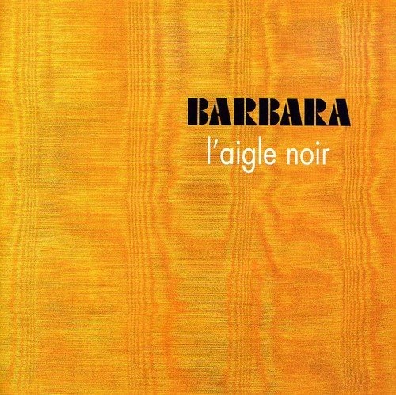

L’Aigle noir
Je connaissais évidemment Barbara de nom, mais très peu sa musique. Ce qui m’a frappé d’abord, c’est le dépouillement. Beaucoup de morceaux reposent presque entièrement sur la voix et le piano, sans batterie ni basse, avec une esthétique de chanson française très marquée par son époque.
Et pourtant, il y a régulièrement de petites fissures dans ce classicisme. Des accords légèrement dissonants, des arrangements qui deviennent soudain plus inquiétants, quelques interventions de violon très dramatiques. Ce sont ces moments-là qui m’ont le plus touché. Ils sont rares, parfois très furtifs, mais ils donnent l’impression que quelque chose de beaucoup plus sombre se cache sous la surface.
Sur L’Aigle noir, la production m’a même fait penser par moments à Histoire de Melody Nelson de Gainsbourg : il y a une ampleur orchestrale, une étrangeté, presque quelque chose de cinématographique.
J’admire beaucoup plus ce disque que je ne l’aime.
Les textes sont probablement ce que je retiens le plus. C’est très bien écrit, très évocateur, avec une vraie puissance poétique. Le morceau-titre garde une dimension onirique qui le rend troublant sans qu’il soit nécessaire de l’enfermer dans une seule lecture.
Je reconnais complètement la force formelle du disque, mais je suis resté à distance émotionnellement. La production, certaines orchestrations et plus largement cette esthétique très chanson française me paraissent aujourd’hui un peu poussiéreuses.
Ce qui me reste, ce sont surtout les instants où l’élégance se fissure : une corde plus sombre, une harmonie un peu instable, un surgissement dramatique inattendu. Comme si le disque devenait soudain plus vivant au moment précis où il cesse d’être parfaitement sage.